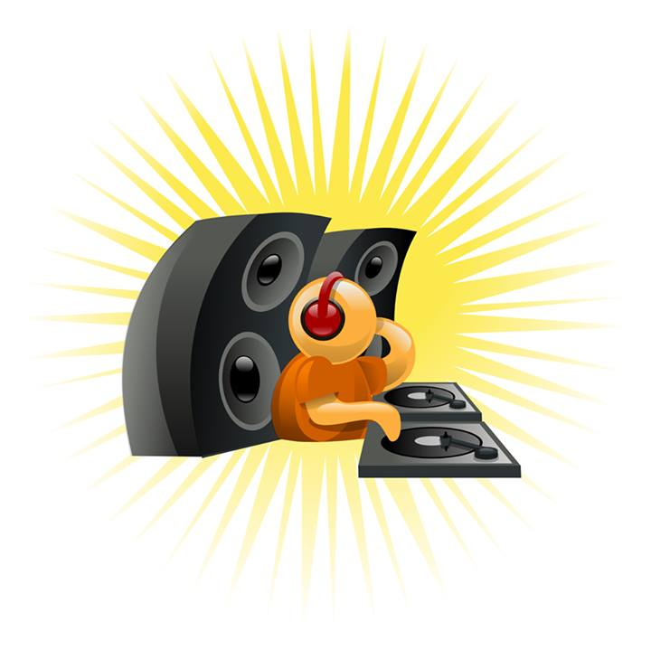
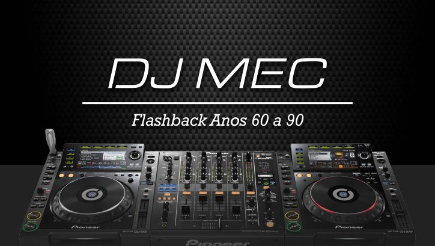
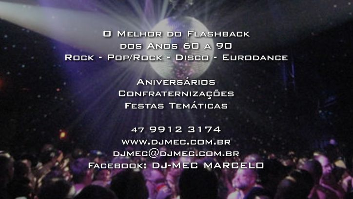
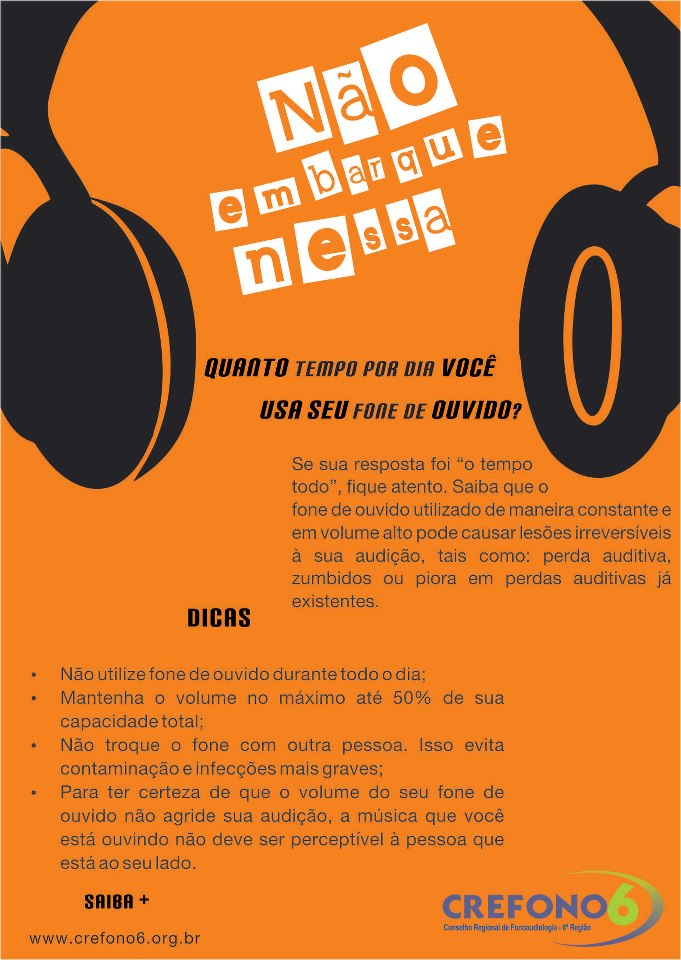
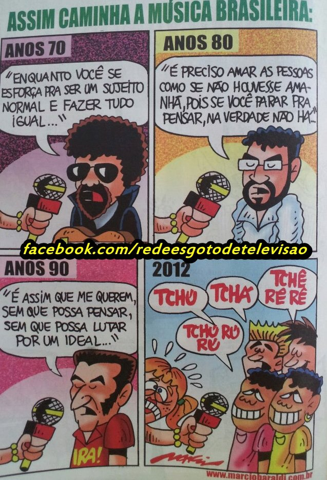
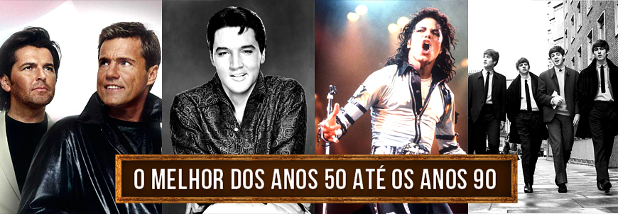
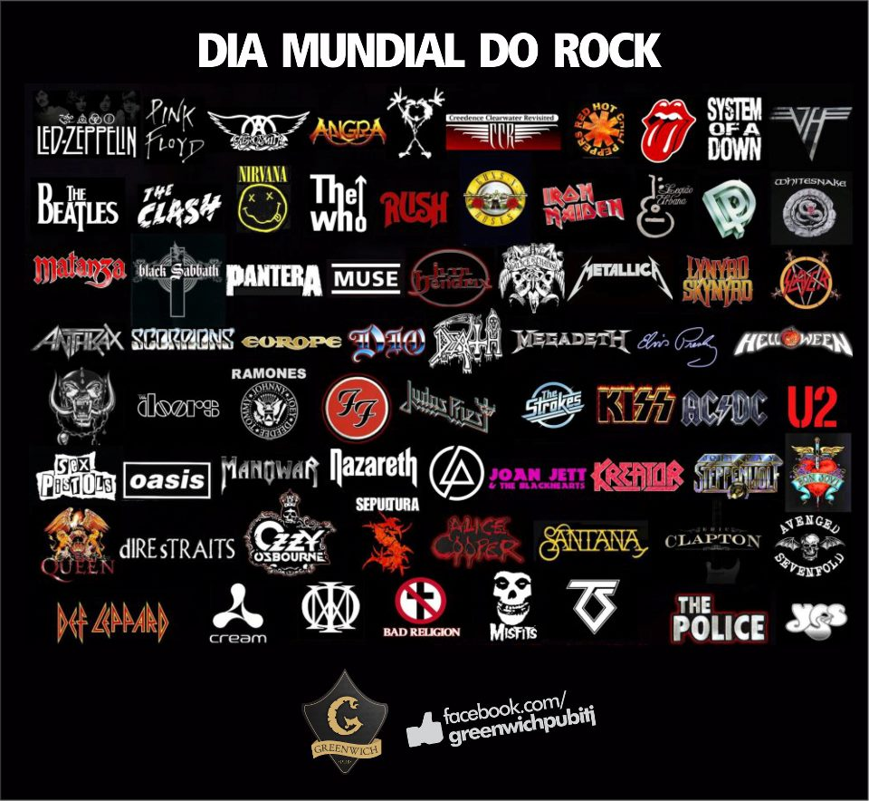
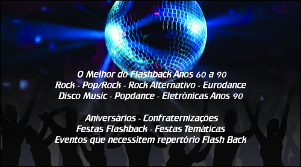

I N F O R M E S
AS MELHORES
BANDAS DE HARD ROCK
http://selvadorockandroll.blogspot.com.br/2013/06/as-melhores-bandas-do-hard-rock.html
OS MELHORES
BATERISTAS DO ROCK
http://rockandrolljungle.blogspot.com.br/2014/04/os-melhores-bateristas-do-rock.html
ROCKSTARS EM
INÍCIO DE CARREIRA
http://rockandrolljungle.blogspot.com.br/2014/05/rockstars-em-comeco-de-carreira.html
ÚLTIMOS SHOWS
DE ALGUMAS BANDAS DE ROCK
http://rockandrolljungle.blogspot.com.br/2014/03/ultimos-shows-de-algumas-grandes-bandas.html
OS MELHORES
VOCALISTAS MASCULINOS DO ROCK
http://rockandrolljungle.blogspot.com.br/2014/03/os-melhores-vocalistas-masculinos-do.html
OS MELHORES
GUITARRISTAS DO ROCK
http://selvadorockandroll.blogspot.com.br/2014/11/os-melhores-guitarristas-do-rock.html
OS MELHORES
BAIXISTAS DO ROCK
http://rockandrolljungle.blogspot.com.br/2014/06/os-melhores-baixistas-do-rock.html
AS MELHORES
VOCALISTAS DO ROCK
http://rockandrolljungle.blogspot.com.br/2014/02/as-melhores-vocalistas-do-rock.html
OS MELHORES
ALBUNS - ROCK BRASIL ANOS 90
http://selvadorockandroll.blogspot.com.br/2013/05/os-melhores-albuns-do-rock-brasileiro.html
OS MELHORES
TECLADISTAS DO ROCK
http://rockandrolljungle.blogspot.com.br/2014/09/os-melhores-tecladistas-do-rock.html
AS MELHORES
BANDAS COVER DO ROCK
http://rockandrolljungle.blogspot.com.br/2011/10/as-melhores-bandas-cover.html
30 MELHORES
SHOWS - ROCK IN RIO
http://rockandrolljungle.blogspot.com.br/2011/08/as-30-melhores-apresentacoes-do-rock-in.html
MELHORES
VIDEO-CLIPES ANOS 80
http://rockandrolljungle.blogspot.com.br/2012/04/os-melhores-videoclipes-dos-anos-80.html
MELHORES
ALBUNS COVER
http://rockandrolljungle.blogspot.com.br/2012/01/os-melhores-albuns-de-rock-so-de-covers.html
OS MELHORES
ROCKS DANÇANTES
http://rockandrolljungle.blogspot.com.br/2012/06/dicas-de-musicas-de-rock-dancantes.html
AS MELHORES
BANDAS DE ROCK ALTERNATIVO
http://rockandrolljungle.blogspot.com.br/2013/08/as-melhores-bandas-do-rock-alternativo.html
APRESENTAÇÕES
PROGRAMA BEAT-CLUB / MUSIKLADEN
http://rockandrolljungle.blogspot.com.br/2012/10/classicas-apresentacoes-do-programa.html
PLAYLISTS P/
VÁRIAS OCASIÕES
http://rockandrolljungle.blogspot.com.br/2012/12/playlists-para-varias-ocasioes.html
OS MELHORES
SHOWS DE ROCK
http://rockandrolljungle.blogspot.com.br/2012/07/os-melhores-shows-do-rock-n-roll-parte.html
MÚSICAS COVER
FAMOSAS
http://rockandrolljungle.blogspot.com.br/2011/12/covers-que-ficaram-mais-conhecidos-que.html
CASAIS
FAMOSOS DO ROCK
http://rockandrolljungle.blogspot.com.br/2011/11/os-casais-mais-famosos-do-rock.html
AS MELHORES
DO ROCK BRASIL ANOS 2000
http://rockandrolljungle.blogspot.com.br/2013/11/as-melhores-musicas-do-rock-brasileiro.html
AS MELHORES
BALADAS DO ROCK
http://selvadorockandroll.blogspot.com.br/2014/12/as-melhores-baladas-do-rock-parte-3.html
BANDAS POUCOS
CONHECIDAS
http://rockandrolljungle.blogspot.com.br/2014/07/dicas-de-otimas-musicas-de-bandas-pouco.html
ENCONTROS DO
ROCK QUE FICARAM NA HISTÓRIA
http://rockandrolljungle.blogspot.com.br/2011/09/encontros-que-ficaram-para-historia.html
AS MELHORES
BANDAS DE HEAVY METAL
http://rockandrolljungle.blogspot.com.br/2013/07/as-melhores-bandas-do-heavy-metal.html
AS MAIS BELAS
GUITARRAS DO ROCK
http://rockandrolljungle.blogspot.com.br/2011/06/as-mais-belas-guitarras-do-rock-n-roll.html
10 GRANDES
GUITARRISTAS
http://rockandrolljungle.blogspot.com.br/2014/08/como-10-grandes-guitarristas-comecaram.html
MELHORES
MÚSICAS - NOMES IGUAIS AS BANDAS
http://rockandrolljungle.blogspot.com.br/2012/02/melhores-musicas-com-os-nomes-iguais.html
MELHORES
VIDEO-CLIPES ANOS 90
http://rockandrolljungle.blogspot.com.br/2012/05/os-melhores-videoclipes-dos-anos-90.html
DICAS DE
BANDAS - POUCO CONHECIDAS
FILMES COM
TEMAS ROCK
http://rockandrolljungle.blogspot.com.br/2011/07/dica-de-filmes-com-o-tema-rock-n-roll.html
MÚSICAS PARA
OUVIR NA ESTRADA
http://rockandrolljungle.blogspot.com.br/2012/03/dicas-de-boas-musicas-para-se-escutar.html
MÚSICAS
INSTRUMENTAIS DO ROCK
http://rockandrolljungle.blogspot.com.br/2012/06/as-melhores-musicas-instrumentais-do.html
CAPAS
ALTERNATIVAS DO ROCK
http://rockandrolljungle.blogspot.com.br/2012/06/capas-alternativas-de-albuns-de-rock.html
AS MELHORES
MÚSICAS - VOCAL FEMININO ROCK
http://rockandrolljungle.blogspot.com.br/2012/07/melhores-musicas-de-rock-com-vocais.html
AS MELHORES
BANDAS DE PUNK ROCK
http://rockandrolljungle.blogspot.com.br/2013/11/as-melhores-bandas-do-punk-rock.html
AS MELHORES
BANDAS DE GRUNGE
http://rockandrolljungle.blogspot.com.br/2013/08/as-melhores-bandas-do-grunge.html
A arte do DJ não consiste apenas em mixagens precisas, está muito mais em
encontrar músicas interessantes, fantásticas, e tocá-las no momento certo. Ter
sensibilidade e comunicação com seu público. Assim, um DJ nunca é melhor ou
maior do que seus próprios ouvintes. Então, um DJ é um colecionador, um pregador
musical, um técnico de som e alguém que procura transmitir emoções através de
uma seleção de discos. Essa é a essência! Viva o flashback!

DJ MEC - O
MELHOR DO FLASHBACK ANOS 60 A 90


DJ MEC - O
MELHOR DO FLASHBACK ANOS 60 A 90


RÁDIO ON-LINE
Rádio Zero80 -
programação anos 70/80/90:
http://www.radiozero80.com.br/
Rádio Coisa
Velha:
http://dyb.fm/coisavelha
Rádio Máquina
do Tempo:
http://www.radiomaquinadotempo.com.br/
Rádio 80s best:
http://www.radio80best.com/
Rádio Só
Flashback: http://soflashback.net/
Rádio Flashback
Indaial:
http://www.radioflashbackindaial.com/
PARA REFLETIR

QUEM OUVE
ROCK

ETERNO ROCK

MÚSICA É TUDO

CUIDADOS C/
FONE DE OUVIDO

MÚSICAS PARA
OUVIR GRÁTIS
http://som13.com.br/
ASSIM CAMINHA
A MÚSICA BRASILEIRA

101 DISCOS
ESSENCIAIS DE ROCK
http://whiplash.net/materias/melhores/165135.html
VICIADOS EM
MÚSICA

TABELA
PERIÓDICA DO ROCK
http://cafecomlimao.files.wordpress.com/2011/08/tabela_rock_grande.jpg

3 MELHORES
GUITARRISTAS DO MUNDO
http://www.u2br.com/portal/node/10003101
35 ANOS SEM O
REI - ELVIS PRESLEY
http://oglobo.globo.com/infograficos/elvis-presley/
VÍDEOS -
PROGRAMA GOLD SONGS
http://goldsongs.com.br/?page_id=3068
DJ MEC -
FLASHBACK ANOS 50 A 90

13 DE JULHO -
DIA MUNDIAL DO ROCK

LINKS -
BANDAS & ARTISTAS
Artistas e Bandas - Gênero
Rock:
http://whiplash.net/indices/bandas_rock.html
Artistas e Bandas - Gênero
Heavy Metal:
http://whiplash.net/indices/bandas_heavy_metal.html
Artistas e Bandas - Gênero
Hard Rock:
http://whiplash.net/indices/bandas_hard_rock.html
Artistas e Bandas - Gênero
Classic Rock:
http://whiplash.net/indices/bandas_classic_rock.html
Artistas e Bandas - Gênero
Pop Rock:
http://whiplash.net/indices/bandas_pop_rock.html
Artistas e Bandas - Gênero
Punk Rock:
http://whiplash.net/indices/bandas_punk_rock.html
DVD
COLABORATIVO U2 360º - DOWNLOAD

100 ANOS DE
MÚSICA - 1904 A 2012

DJ MEC -
ESPECIALIZADO EM FLASHBACK ANOS 60 A 90

DJ MEC - O
MELHOR DO FLASHBACK ANOS 60 A 90

DJ MEC - O
MELHOR DO FLASHBACK ANOS 60 A 90

PROJETO DOUBLE EFFECT

O QUE É
FLASHBACK ?
Flashback é voltar rapidamente para o passado, mas possui outros significados, depende onde é empregado. Neste caso, flashback é um fato acontecido no passado inserido em um momento atual, através da lembrança das pessoas, uma música, um livro ou filme.
Em linguagem coloquial, flashback também é utilizado para se referir quando alguém reencontrou um antigo namorado, e voltam a reviver o amor antigo.
Flashback também é um termo muito utilizados nas músicas antigas, uma música dos anos 50, 60, 70, 80 ou 90 são conhecidas como Flash
Back.
O QUE FAZ O DJ
?
Para entender
melhor sobre a atividade, procuramos desenvolver no conteúdo a seguir, algumas
informações importantes sobre a profissão, o meio e as atividades pertinentes
ao mundo dos DJs.
O que é um DJ
Um disc jockey (DJ ou dee jay)
é um artista profissional que seleciona e roda as mais diferentes composições,
previamente gravadas para um determinado público alvo, trabalhando seu conteúdo
e diversificando seu trabalho em radiodifusão em frequência modulada (FM),
pistas de dança de bailes, clubes, boates e danceterias.
O que faz
o DJ:
Ele destila ou purifica qualidade musical. Ele seleciona músicas ou gravações
e através delas cria uma performance improvisada de acordo com o tempo, o lugar
e as pessoas. Numa festa ou clube, o DJ não está apenas tocando uns discos,
ele está criando uma atmosfera, gerando sentimentos e respondendo à reação
das pessoas. Um DJ médio tem a capacidade de mexer no humor das pessoas dançando,
um DJ excepcional é capaz de fazer uma pista inteira se apaixonar.
Origem do
Termo DJ:
O termo disc jockey foi primeiramente (e ainda é) utilizado para
descrever a figura do locutor de rádio que introduziam e tocavam discos na pick
ups, posteriormente, o long play, mais tarde compact disc laser (CD) e
atualmente, empregam o uso do mp3. O nome foi logo encurtado para DJ.
Hoje, diante dos numerosos fatores envolvidos, incluindo a composição
escolhida, o tipo de público alvo, a lista de músicas, o meio e o
desenvolvimento da manipulação do som, há diferentes tipos de DJs, sendo que
nem todos usam na verdade discos, alguns podem tocar com CDs, outros com laptop
(emulando com softwares), entre outros meios.
A evolução
da profissão de DJ:
Antes de falarmos sobre o que você precisa para se tornar um bom DJ, vamos
falar um pouco sobre o paradigma da tecnologia e qual a real função que você
como DJ irá exercer.
Os equipamentos profissionais para DJs vem evoluindo rapidamente, mudando a
forma de mixar e influenciando na música diretamente. O toca-discos(vinil)
apresenta diversas formas para os DJs incrementarem, darem um toque
pessoal a música através de efeitos como back to back, scratch, speed back.
Com a evolução tecnológica, chegaram os CDs profissionais que não tinham os
recursos acima, porém, as indústrias e DJs criativos criaram novos efeitos e
sons usando o que tinham em mãos. A cada dia, surgem Players e Mixers com novos
recursos e efeitos, inclusive, simulando e facilitando alguns, possíveis até
então somente em toca-discos.
Novas tendências:
Com a extraordinária velocidade do avanço da tecnologia, intensificaram-se
também o lançamento de computadores dedicados para manipulação ou criação
de áudio e efeitos conhecidos como groove box, sintetizadores, samplers entre
outros equipamentos profissionais para DJs e produtores.
Quanto aos computadores convencionais que já estão na música há mais de duas
décadas e iniciaram sua "carreira" com softwares (programas)
conhecido como sequenciadores, hoje são capazes de substituir quase todos os
equipamento de um estúdio de DJ.
Profissão da inovação:
A corrida tecnológica
estará sempre inovando tudo ao nosso redor, influenciando na forma de viver e
obviamente de fazer música. Não adianta sermos conservadores ou
tradicionalistas pois a qualquer momento seremos atropelados por alguma novidade
tecnológica. Como nada é perfeito, sempre haverão prós e contras, diferenças
entre o velho e o novo. Um pouco de bom senso ajudará na adaptação tecnológica.
E além do mais, cabe a cada um escolher o que mais se encaixa as suas
necessidades.
O QUE É
NECESSÁRIO PARA SER UM BOM DJ ?
O que é
necessário fazer para ser um bom DJ:
Para ser um bom
profissional não é necessário ter equipamentos top de linha, com vários
efeitos e recursos ou marca. Uma boa marca facilita, mas o que importa
mesmo é o seu conhecimento, principalmente o musical, habilidade e
criatividade.
Tipos de
DJ:
Na atualidade, o
DJ assumiu muitas tarefas que antes eram exercidas por profissionais diferentes,
isso graças a incorporação a informática a habilidade e conhecimento de técnicas
de mixagem realizadas pelos DJ's. Um apanhado das funções que podem ser exercídas
segue abaixo:
- DJ Comercial: É a figura mais importante de uma festa social
em casas e bailes, é um profissional multitarefa, pois além de montar parte de
seu equipamento ele irá exercer a função de locutor e animador. Este é o
profissional que é mais exigido e também o mais comum pois se popularizou com
o aparecimento de softwares para DJ. Atualmente ele precisa de um bom computador
com um arsenal de musicas MP3 dos mais diversos gostos, amplificadores e caixas
de som, ah, claro também precisa de um software de mixagem digital como o
Virtual DJ.
- DJ Balada: É o DJ propriamente dito, é a figura que tem que
estar presente em TODAS as casas noturnas e shows, ele pode se apresentar como
artista, e cria seu próprio set e seu ambiente. Este profissional é o que
precisa dos aparelhos mais caros por assim dizer, geralmente um bom mixer, uma
camara de efeitos ou simplesmente como dizem um multiefeito, um par de CDJ (o cd
player com recursos para DJ) um microfone de uso geral e dependendo do caso um
par de PickUp que é o player para os discos de vinil. Geralmente pelo tipo de
material que ele usa e o ambiente onde toca, se preocupa muito mais com seu SET
DE MUSICAS que com os aparelhos, geralmente não precisa se preocupar com a
parte de amplificação e caixas de som ou coisas do genero.
- DJ
Música Eletrônica: Trabalha especificamente em casas noturnas com
repertório musical voltado somente a música eletrônica.
- DJ ou Produtor: É o profissional que geralmente trabalha com
jingles e produções voltadas a comercial, ele usa a música como ferramenta de
trabalho e produz trilhas sonoras, jingles e outros. Atualmente ele precisa de
uma boa mesa de som, um computador com placa de som de alta definição,
processador de efeitos de voz, câmara de eco, equalizadores, microfones para
voz, caixas de referencia para saída de áudio, softwares de produção como
Cake ou Sonar e também um software para DJ como o Virtual Dj.
- DJ Programador: É uma função nova, muito difundida com o
aumento de rádios e programação web de músicas, ele precisa de um bom
software de mídia como o Windows Media ou o Real aonde ele irá simplesmente
criar um set de músicas que será usado como fundo musical de um site web ou
mais off-line que isso, irá gravar set de cd's para serem usados em lojas como
supermercados, roupas e outras, evitando que uma rádio comercial fique
sintonizada.
- DJ
Flashback ou DJ Retrô: é o profissional que trabalha com repertório
contendo músicas antigas, normalmente resgatando alguma época ou estilo
específico, relativo as décadas de 60, 70, 80 ou 90. Trabalha com festas
particulares , eventos temáticos, noite flashback/retrô que exigem repertório
flashback-retrô. Também podem trabalhar em casas noturnas e/ou bares temáticos
que dão ênfase ao repertório musical antigo, seja rock, pop/rock, disco music,
eurodance, eletropop, eletrorock, popdance, etc.
TECNOLOGIA NO
MUNDO DOS DJs
Tecnologia
- BPM = andamento
- Batidas por minuto (Beats
Per Minute): representa o ritmo, o número de batidas audíveis de uma peça
de música por minuto. Quando maior for o número de BPM, mais rápido será
o andamento da música para quem dança. Uma música lenta tem normalmente
entre 70 a 90 BPM, ao passo que as músicas de dança rondam 120 BPM, e as
músicas trance podem atingir 160 BPM. O andamento é o número de BPM.
-
- Sincronização
- Sincronizar duas peças
consiste em pô-las no mesmo ritmo (atribuir-lhes o mesmo número de
batidas por minuto) e ajustar os batimentos de modo que fiquem alinhados
em simultâneo (retardando ou parando a segunda peça para reiniciá-la no
preciso momento em que o dispositivo reproduz a batida da primeira peça).
-
- Crossfader
- O crossfader é uma barra
horizontal deslocável para a direita ou esquerda, cuja posição
determina a mistura entre uma faixa de áudio reproduzida no deck direito
e outra reproduzida no deck esquerdo. Por exemplo: quando o crossfader está
completamente para a direita, ouvimos 0% da faixa de áudio no deck
esquerdo + 100% da faixa de áudio no deck direito = ouvimos apenas o som
do deck direito. Quando crossfader se encontra completamente para a
esquerda, ouvimos 100% da faixa de áudio no deck esquerdo + 0% da faixa
de áudio no deck direito = ouvimos apenas o som do deck esquerdo. Quando
o crossfader está ao centro, ouvimos 50% da faixa de áudio esquerda +
50% da faixa de áudio direita = ouvimos as faixas esquerda e direita com
um volume idêntico.
-
- Jog Wheel
- Em DJing, a jog wheel é
uma roda que simula a função de um prato (também conhecido como deck de
vinil), e pode ser utilizada para controlar a reprodução de um leitor de
CD, DVD, MP3 ou do computador. Uma jog wheel serve para navegar dentro de
uma peça, aumentar ou diminuir a velocidade da música ou produzir
efeitos sonoros, como o scratching (o som feito por um disco microssulco
num prato ao ser puxado rapidamente para trás e para a frente com a mão).
As DJ Console, DJ Control e Mobile DJ da Hercules incluem todas jog
wheels.
-
- Transição
- Para um DJ, transição
significa mudar de uma peça para outra. De uma maneira geral, um DJ
procura sincronizar a música no segundo deck com o ritmo da primeira, e
desloca o crossfader do primeiro deck em direcção ao segundo
(possivelmente ao mesmo tempo que modifica as EQ), permitindo a quem dança
continuar a dançar à mesma velocidade, como se se tratasse de uma só peça
de música, sem ter de saltar uma batida para passar de um ritmo para
outro.
-
- DJ
- Abreviatura de disco-jóquei:
uma pessoa que selecciona e passa música numa festa.
-
- Equalização (EQ)
- A equalização é o
ajustamento do som dividido em bandas de frequências, muitas vezes na
forma de frequências graves, médias e agudas. A equalização consiste
no aumento ou na diminuição do volume de uma gama de frequências: por
exemplo, aumento de 12 dB dos graves (frequências de 20 Hz a 150 Hz) e
diminuição de -12 dB dos agudos e médios. A equalização ajuda a
tornar a música mais dançável: uma vez que as frequências graves
fornecem o ritmo principal, o aumento dos graves pode fazer com que seja
mais fácil dançar. A equalização também pode ajudar a misturar duas
peças de música: ao retirar-se os graves da faixa A para misturá-la com
a faixa B (na qual foram suprimidos os médios e agudos), sobre a melodia
da faixa A é sobreposta um híbrido do ritmo da faixa B. A tonalidade de
uma peça é afectada pelo ajustamento da equalização.
-
- Entrada fono
- Os gira-discos tiveram
praticamente desde sempre um nível de saída muito mais baixo do que o nível
de linha (o nível de linha é o nível de saída da maioria dos
dispositivos de reprodução de som: leitor de CD, leitor de MP3,
sintonizador de TV ou rádio): este nível de saída para gira-discos,
designado por nível fono, necessita de uma pré-amplificação específica.
Os pratos de vinil mais populares para DJ, como o mítico Technics SL 1200
MK2, continuam a dispor de uma saída de nível fono, se bem que muitos
pratos de vinil têm actualmente um sinal de áudio de nível de linha. É
possível reconhecer um conector fono não só porque tem
"Phono" escrito por cima, mas também pelo facto de ser
acrescentado um cabo de terra às saídas fono estéreo: visto que o nível
fono é mais baixo do que o nível de linha, torna-se necessário haver um
cabo de terra para protegê-lo dos distúrbios eléctricos. Por vezes, uma
entrada fono é conhecida como entrada RIAA. A DJ Console MK2 possui duas
entradas fono estéreo.
-
- Monitorização
- Para um DJ, monitorizar
consiste em ouvir outra peça de música além da que está a ser
reproduzida para o público: regra geral, um DJ ouve a peça de música
que será reproduzida a seguir.
VOLTAR


{kind=link}